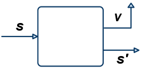
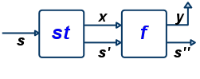

A Tree Datatype
A tree with data at the leaves
Here’s an example Tree Char
Lets Work it Out!
Write a function to add a distinct label to each leaf
such that
Labeling a Tree
label :: Tree a -> Tree (a, Int)
label t = t'
where
(_, t') = (helper 0 t)
helper :: Int -> (Int, Tree (a, Int))
helper n (Leaf x) = (n+1, Leaf (x, n))
helper n (Node l r) = (n'', Node l' r')
where
(n', l') = helper n l
(n'', r') = helper n' r
EXERCISE
Now, modify label so that you get new numbers for each letter so,
>>> keyLabel (Node (Node (Leaf 'a') (Leaf 'b')) (Node (Leaf 'c') (Leaf 'a')))
(Node
(Node (Leaf ('a', 0)) (Leaf ('b', 0)))
(Node (Leaf ('c', 0)) (Leaf ('a', 1))))That is, a separate counter for each key a, b, c etc.
HINT Use the following Map k v type
-- | The empty Map
empty :: Map k v
-- | 'insert key val m` returns a new map that extends 'm'
-- by setting `key` to `val`
insert :: k -> v -> Map k v -> Map k v
-- | 'findWithDefault def key m' returns the value of `key`
-- in `m` or `def` if `key` is not defined
findWithDefault :: v -> k -> Map k v -> v
Common Pattern?
Both the functions have a common “shape”
If we generally think of Int and Map Char Int as global state
State Transformers
Lets capture the above “pattern” as a type
- A State Type
- A State Transformer Type
A state transformer is a function that
- takes as input an old
s :: State - returns as output a new
s' :: Stateand valuev :: a

Executing Transformers
Lets write a function to evaluate an ST a
QUIZ
What is the value of quiz ?
A. 103
B. [100, 101, 102]
C. (103, [100, 101, 102])
D. [0, 1, 2]
E. Type error
Lets Make State Transformer a Monad!
instance Monad ST where
return :: a -> ST a
return = returnST
(>>=) :: ST a -> (a -> ST b) -> ST b
(>>=) = bindST
EXERCISE: Implement returnST!
What is a valid implementation of returnST?
What is returnST doing ?
returnST v is a state transformer that … ???
(Can someone suggest an explanation in English?)
HELP
Now, lets implement bindST!
type State = Int
data ST a = STC (State -> (State, a))
bindST :: ST a -> (a -> ST b) -> ST b
bindST = ???
What is returnST doing ?
returnST v is a state transformer that … ???
(Can someone suggest an explanation in English?)
What is returnST doing ?
returnST v is a state transformer that … ???
(Can someone suggest an explanation in English?)
bindST lets us sequence state transformers
st >>= f
- Applies transformer
stto an initial states- to get output
s'and valuex
- to get output
- Then applies function
fto the resulting valuex- to get a second transformer
- The second transformer is applied to
s'- to get final
s''and valuey
- to get final
OVERALL: Transform s to s'' and produce value y

Lets Implement a Global Counter
The (counter) State is an Int
A function that increments the counter to return the next Int.
next is a state transformer that that returns Int values
QUIZ
Recall that
evalState :: State -> ST a -> a
evalState s (STC st) = snd (st s)
next :: ST Int
next = STC (\n -> (n+1, n))What does quiz evaluate to?
A. 100
B. 101
C. 0
D. 1
E. (101, 100)
QUIZ
Recall the definitions
evalState :: State -> ST a -> a
evalState s (STC st) = snd (st s)
next :: ST Int
next = STC (\n -> (n+1, n))Now suppose we have
What does quiz evaluate to?
A. 100
B. 101
C. 0
D. 1
E. (101, 100)
QUIZ
Consider a function wtf2 defined as
What does quiz evaluate to?
A. Type Error!
B. [100, 100, 100]
C. [0, 0, 0]
D. [100, 101, 102]
E. [102, 102, 102]
Chaining Transformers
>>= lets us chain transformers into one big transformer!
So we can define a function to increment the counter by 3
-- Increment the counter by 3
next3 :: ST [Int, Int]
next3 = next >>= \n1 ->
next >>= \n2 ->
next >>= \n3 ->
return [n1,n2,n3]And then sequence it twice to get
Lets do the above examples
Remember, do is just nice syntax for the above!
-- Increment the counter by 3
next3 :: ST [Int, Int]
next3 = do
n1 <- next
n2 <- next
n3 <- next
return [n1,n2,n3]And then sequence it twice to get
Labeling a Tree with a “Global Counter”
Lets rewrite our Tree labeler with ST
Wow, compare to the old code!
helper :: Int -> (Int, Tree (a, Int))
helper n (Leaf x) = (n+1, Leaf (x, n))
helper n (Node l r) = (n'', Node l' r')
where
(n', l') = helper n l
(n'', r') = helper n' rAvoid worrying about propagating the “right” counters
- Automatically handled by
STmonad instance!
Executing the Transformer
In the old code we called the helper with an initial counter 0
In the new code what should we do?
helperS :: Tree a -> ST (Tree (a, Int))
helperS = ...
labelS :: Tree a -> Tree (a, Int)
labelS = ???Now, we should be able to exec the labelS transformer
>>> labelS (Node (Node (Leaf 'a') (Leaf 'b')) (Leaf 'c'))
(Node (Node (Leaf ('a', 0)) (Leaf ('b', 1))) (Leaf ('c', 2)))
How to implement keyLabel?
So far, we hardwired an Int counter as our State
Have to reimplement the monad if we want a different state?
- e.g.
Map Char Intto implementkeyLabel
Don’t Repeat Yourself!
A Generic State Transformer
Don’t have separate types for IntList and CharList
Define a generic list
[a]whereais a type parameterInstantiate
ato get[Int]and[Char]
Similarly, reuse ST with a type parameter!
- State is represented by type
s - Return Value is the type
a(as before).
A Generic State Transformer Monad
Lets make the above a(n instance of) Monad
instance Monad (ST s) where
return x = STC (\s -> (s, x))
st >>= f = STC (\s -> let (s', x) = runState st s
in runState (f x) s')
runState :: ST s a -> s -> (s, a)
runState (STC f) s = f s
evalState :: ST s a -> s -> a
evalState st s = snd (runState st s) (exactly the same code as returnST and bindST)
Lets implement keyLabel
- Define a
Map Char Intstate-transformer
- Modify
nextto take aChar
charNext :: Char -> CharST Int
charNext c = STC (\m ->
let
n = M.findWithDefault 0 c m -- label for 'c'
m' = M.insert c (n+1) m -- update map
in
(m', n)
)- Modify
helperto usecharNext
keyHelperS :: Tree Char -> ST (Tree (Char, Int))
keyHelperS (Leaf c) = do
n <- charNext c
return (Leaf (c, n))
keyHelperS (Node l r) = do
l' <- keyHelperS l
r' <- keyHelperS r
return (Tree l' r')
keyLabelS :: Tree Char -> Tree (Char, Int)
keyLabelS t = evalState (keyHelperS t) empty Lets make sure it works!
>>> keyLabelS charT
Node
(Node (Leaf ('a', 0)) (Leaf ('b', 0)))
(Node (Leaf ('c', 0)) (Leaf ('a', 1)))
Lets look at the final “state”
The returned Tree is
and the final State is
Generically Getting and Setting State
As State is “generic”
- i.e. a type variable not
IntorMap Char Intor …
It will be convenient to have “generic” get and put functions
- that read and update the state
-- | `get` leaves state unchanged & returns it as value
get :: ST s s
-- | `set s` changes the state to `s` & returns () as a value
put :: s -> ST s ()
EXERCISE
Can you fill in the implementations of get and set ?
HINT Just follow the types…
-- | `get` leaves state unchanged & returns it as value
get :: ST s s
get = STC (\oldState -> ???)
-- | `put s` changes the state to `s` & returns () as a value
put :: s -> ST s ()
put s = STC (\oldState -> ???)
Using get and put : Global Counter
We can now implement the plain global counter next as
next :: ST Int Int
next = do
n <- get -- save the current counter as 'n'
put (n+1) -- update the counter to 'n+1'
return n -- return the old counter
Using get and put : Frequency Map
Lets implement the char-frequency counter charNext as
charNext :: Char -> ST (Map Char Int) Int
charNext c = do
m <- get -- get current freq-map
let n = M.getWithDefault 0 c m -- current freq for c (or 0)
put (M.insert c (n+1) m) -- update freq for c
return n -- return current as value
A State-Transformer Library
The Control.Monad.State module
defines a State-Transformer like above.
hides the implementation of the transformer
Clients can only use the “public” API
-- | Like 'ST s a' but "private", cannot be directly accessed
data State s a
-- | Like the synonyms described above
get :: State s s
put :: s -> State s ()
runState :: State s a -> s -> (a, s)
evalState :: State s a -> s -> aYour homework will give you practice with using these
- to do imperative functional programming
The IO Monad
Remember the IO a or Recipe a type from this lecture
- Recipes that return a result of type
a - But may also perform some input/output
A number of primitives are provided for building IO recipes
Basic actions that can be “chained” via >>= etc.
A Recipe to Read a Line from the Keyboard
getLine :: IO String
getLine = do
x <- getChar
if x == '\n' then
return []
else do
xs <- getLine
return (x:xs)
IO is a “special case” of the State-Transformer
The internal state is a representation of the state of the world
A Recipe is a function that
- takes the current
Worldas its argument - returns a value
aand a modifiedWorld
The modified World reflects any input/output done by the Recipe
This is just for understanding, GHC implements IO more efficiently!